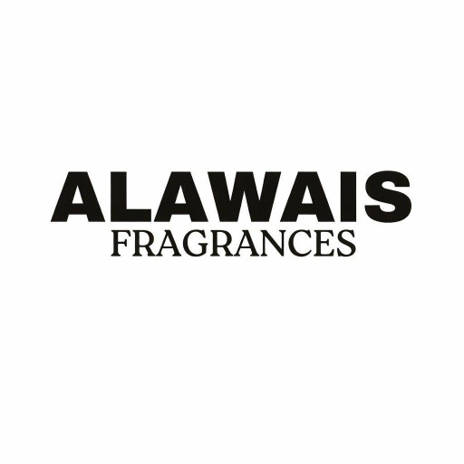

Alawais Fragrances — Premium Perfume E-Commerce Store
A complete design and development project for a modern fragrance brand built with WordPress, Elementor, and WooCommerce — focused on creating a luxury shopping experience, improving product discovery, and increasing online sales.

+42%
Product engagement
+31%
Conversion rate
−27%
Cart abandonment
4.8/5
Customer satisfaction
Project Overview
Alawais Fragrances is a premium fragrance and perfume retailer focused on delivering high-quality scents to customers across Pakistan. The objective was to build a professional e-commerce platform that reflects the luxury nature of the brand while providing a smooth and intuitive shopping experience.
The website was designed to showcase fragrances elegantly, simplify the purchasing process, and establish trust with first-time customers while maintaining a premium brand image throughout the customer journey.
Problem
Many fragrance stores struggle to translate the premium in-store experience to an online environment. Customers often face cluttered layouts, poor product organization, and a lack of trust signals that can negatively impact conversions.
- Limited online brand presence
- Weak luxury positioning
- Difficult product navigation
- Poor mobile shopping experience
- Lack of customer trust signals
Solution
I designed and developed a complete WooCommerce-powered e-commerce platform using WordPress and Elementor with a strong focus on usability, performance, and premium brand presentation.
- Custom homepage focused on luxury branding
- Structured fragrance categories for easier browsing
- WooCommerce integration for product management
- Mobile-first responsive layouts
- Streamlined shopping and checkout experience
- Trust-focused design and product presentation
Design Approach
The visual direction was inspired by premium fragrance brands and luxury retail experiences. The goal was to create a sophisticated interface that allows products to remain the primary focus while maintaining a clean and elegant shopping journey.
- Clean layouts with generous whitespace
- Elegant typography and minimal distractions
- Strong product-focused presentation
- Consistent branding throughout the experience
- Fully responsive design optimized for mobile shoppers
Technology Stack
- WordPress
- Elementor
- WooCommerce
- PHP
- CSS
- Responsive Design Principles
Outcome
The final result is a professional fragrance e-commerce platform that successfully combines luxury branding with modern usability. Customers can browse products effortlessly, explore fragrance collections, and complete purchases through a streamlined checkout experience.
The website provides Alawais Fragrances with a scalable platform for future growth while strengthening the brand's online presence and improving customer confidence.